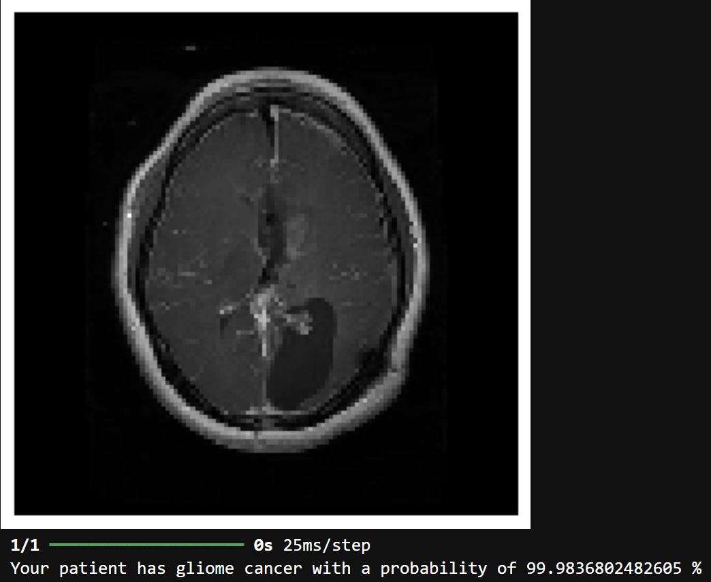

Bienvenue sur la page de présentation de Brainstorm,
une application en développement qui a pour but d'améliorer
la détection ainsi que la localisation des tumeurs chez les patients grâce au Machine
Learning et à un modèle convolutionnel évolué.
Cette application vise à améliorer le diagnostic ainsi que le suivi des patients par les praticiens
du secteur de la santé
Présentation de Brainstorm
Découvrez l'évolution du projet Brainstorm en cliquant sur les liens
>>> Implémentation de la méthode "activation mapping"
pour cibler et localiser les zones qui contribuent le plus à la prise
de décision du modèle. Voici ci-dessous un exemple du fonctionnement
sur deux images médicales de cette méthode de détection
Résultats de la localisation de la tumeur cérébrale (gliome) sur deux exemples (données de tests)
L'intérêt d'utiliser cette méthode réside dans la capacité à obtenir
la localisation de la tumeur avec une grande précision via l'application
d'un seuillage et d'un filtrage. Néanmoins, comme on peut le constater,
le filtrage n'est pas encore optimal (notamment au niveau du crâne).
Cela fera l'objet de la prochaine amélioration.
Prédiction de cancer chez le patient avec localisation de la tumeur sur l'application Brainstorm
12 Décembre 2024 : Création de la version bêta de l'application Brainstorm
>>> Création d'une première version de l'interface utilisateur avec le modèle
CNN développé précédemment. Cette intégration du modèle est modulaire, permettant
ainsi de continuer son amélioration en parallèle du développement de l'application
et des fonctionalités comme la localisation de la tumeur (cette fonctionnalité sera intégrée prochainement).
Dans cette première version de l'application, l'objectif est
d'offrir une interface simple d'utilisation, avec un lien pour
charger l'image depuis un répertoire local. Le modèle CNN implémenté
dans l'application se charge ainsi à donner une évaluation de la prédiction,
et confirme si le patient possède une tumeur ou non.
7 Novembre 2024 : Elaboration d'un modèle capable de détecter la présence d'une tumeur et perfectionnement du modèle
>>> L'application repose sur un modèle CNN conçu pour détecter et avertir le
praticien de l'éventuelle présence d'une tumeur chez un patient. Le modèle est entraîné avec
plus de 1780 images, et validé avec 1190 images médicales sur 20 epochs. Les performances sont
globalement satisfaisantes, avec une accuracy de 99% et une loss de 0.03 ~ 0.04 sur les données de validation,
sans overfitting!
Résultats du modèle CNN développé
Courbes de l'Accuracy et de la Loss
2 Novembre 2024 : Elaboration d'un modèle capable de détecter une tumeur et de classifier par type de tumeurs
>>> L'application repose sur un modèle CNN spécialement conçu pour détecter des tumeurs et classer une image médicale
d'un patient selon le type de tumeurs (méningiome, gliome, etc...). Le praticien peut donc déterminer avec une plus grande précision de l'éventuelle présence d'une tumeur chez un patient.
Le modèle est entraîné avec plus de 1780 images, et validé avec 1190 images médicales sur 30 epochs. Les performances sont
globalement satisfaisantes, avec une accuracy de 91% et une loss de ~ 0.27 sur les données de validation, sans overfitting.
Résultats du modèle CNN développé
Courbes de l'Accuracy et de la Loss
L'intérêt de ce modèle réside dans l'utilisation de la fonction "prédiction" pour évaluer si une image médicale
comporte une tumeur de type gliome, méningiome, etc ou si le patient n'a aucune tumeur. Voici ci-dessous
deux exemples de prédiction basés sur le modèle

Prédiction du type de cancer pour deux images tests
Fondateur
Je m'appelle Grégory BERTRAND, développeur de l'application Brainstorm,
étudiant ingénieur en 3ème année aux Mines de Saint-Etienne et stagiaire - Ingénieur
Système en imagerie médicale chez Thales. Passionné
par les nouvelles technologies depuis mon adolescence, je m'intéresse depuis
maintenant plus de 3 ans à l'application du Machine Learning dans la vie
quotidienne, et en particulier dans le domaine de la santé et du diagnostic
dont l'imagerie médicale.
Contact
Si le projet vous intéresse, ou que vous avez simplement des questions concernant l'application,
vous pouvez me contacter à l'adresse mail suivante : gregory.bertrand@etu.emse.fr